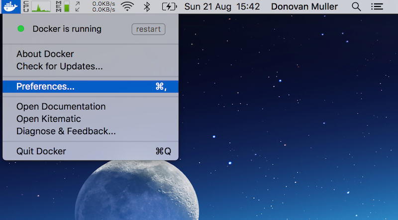
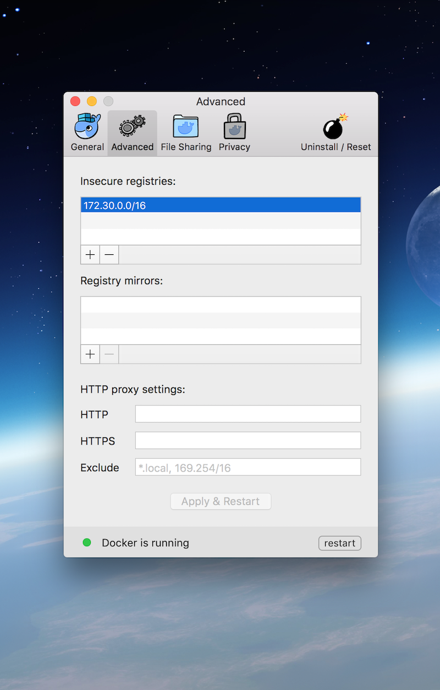
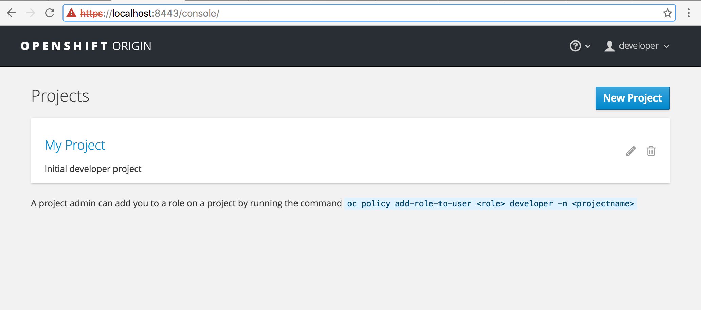
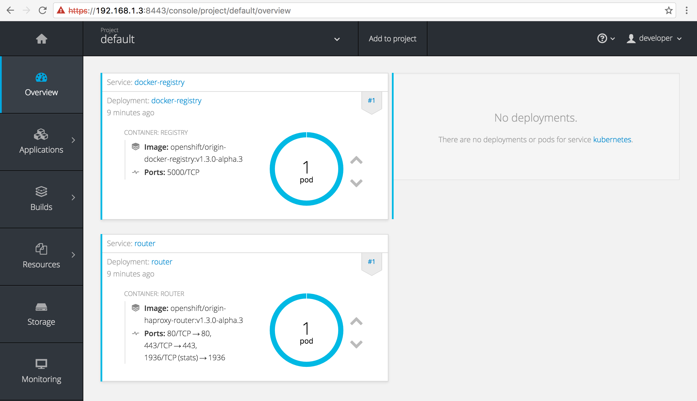

OpenShift Cluster Up with Docker for Mac
Wed, Sep 21, 2016A quick step by step guide to getting a local, single node OpenShift cluster up and running with the oc CLI tools and Docker for Mac.
The oc
If you’ve been to https://github.com/openshift/origin#openshift-application-platform latetly and gazed at the simplicity of installing a local OpenShift Origin cluster simply by typing oc cluster up, you’ll no doubt want to try that out!
However, the current (as of August 21st, 2016) assumption is that you need Docker Toolbox installed for this to work. Only thing is, if you like living on the bleeding edge, you’ll no doubt be running Docker for Mac.
So can we still use oc cluster up? Yes, yes you can.
Installing
I use Homebrew for installing apps on Mac, so I will explain how to get the oc CLI installed using brew. First you need to install the unstable version of oc, which at the time of writing is 1.3.0-alpha.3 (thanks to elyscape), with:
$ brew update
$ brew install --devel openshift-cli
this will install the go dependency if you don’t have it already, pull the OpenShift source from GitHub and build the binaries.
You should now have oc on your path:
$ oc version
oc v1.3.0-alpha.3
kubernetes v1.3.0+507d3a7
features: Basic-Auth
Cluster Up
Making sure you’re Docker for Mac whale is snuggly nestled in your menu bar (I.e. Docker is running), execute the following:
$ oc cluster up
after some Docker image pulling, you will be greeted with this:
-- Checking OpenShift client ... OK
-- Checking Docker client ... OK
-- Checking for existing OpenShift container ... OK
-- Checking for openshift/origin:v1.3.0-alpha.3 image ...
Pulling image openshift/origin:v1.3.0-alpha.3
...
Pulled 3/3 layers, 100% complete
Extracting
Image pull complete
-- Checking Docker daemon configuration ... FAIL
Error: did not detect an --insecure-registry argument on the Docker daemon
Solution:
Ensure that the Docker daemon is running with the following argument:
--insecure-registry 172.30.0.0/16
You can run this command with --create-machine to create a machine with the
right argument.
Feeling a little insecure
Luckily adding 172.30.0.0/16 to the insecure registries for our Docker daemon is as easy as ever. Click the whale, hit “Preferences“:

then add 172.30.0.0/16 to the insecure registries section under the “Advanced” tab:

hit “Apply and Restart” and wait for the Docker daemon to restart.
Missing cat
Good to go, let’s try again:
$ oc cluster up
-- Checking OpenShift client ... OK
-- Checking Docker client ... OK
-- Checking for existing OpenShift container ... OK
-- Checking for openshift/origin:v1.3.0-alpha.3 image ... OK
-- Checking Docker daemon configuration ... OK
-- Checking for available ports ... OK
-- Checking type of volume mount ...
Using Docker shared volumes for OpenShift volumes
-- Checking Docker version ... OK
-- Creating host directories ... OK
-- Finding server IP ..
Using 192.168.1.3 as the server IP
-- Starting OpenShift container ... FAIL
Error: exec: "socat": executable file not found in $PATH
Update - 2016-08-31
The missing socat error below should be fixed with this commit to the openshift-cli formula. The commit adds socat as a dependency and therefore socat will be installed as part of the openshift-cli install.
So close! Apparently we need socat though. No worries, simply install with brew:
# don't need this anymore, see update ^
$ brew install socat
Let’s give it one more try:
oc cluster up
-- Checking OpenShift client ... OK
-- Checking Docker client ... OK
-- Checking for existing OpenShift container ... OK
-- Checking for openshift/origin:v1.3.0-alpha.3 image ... OK
-- Checking Docker daemon configuration ... OK
-- Checking for available ports ... OK
-- Checking type of volume mount ...
Using Docker shared volumes for OpenShift volumes
-- Checking Docker version ... OK
-- Creating host directories ... OK
-- Finding server IP ...
Using 192.168.1.3 as the server IP
-- Starting OpenShift container ...
Creating initial OpenShift configuration
Starting OpenShift using container 'origin'
Waiting for API server to start listening
OpenShift server started
-- Installing registry ... OK
-- Installing router ... OK
-- Importing image streams ... OK
-- Importing templates ... OK
-- Login to server ... OK
-- Creating initial project "myproject" ... OK
-- Server Information ...
OpenShift server started.
The server is accessible via web console at:
https://192.168.1.3:8443
You are logged in as:
User: developer
Password: developer
To login as administrator:
oc login -u system:admin
and there we have it, an OpenShift Origin cluster up and running.
You should be able to hit the OpenShift console at: https://localhost:8443/console/ * using the username and password developer to login.
** or whatever server IP was designated when starting up. In my example above it would be 192.168.1.3*

I need more power
By default the developer user does not have cluster administration rights. Which is why we only see the one project My Project.
A developer needs admin rights, so let’s give it to him using the oadm/oc adm tool:
If for some reason the
oadmbinary is not on your$PATH, you can also useoc admwhich has identical functionality. Thanks to Matthias Lübken (@luebken) for the suggestion.
$ oc login -u system:admin
$ oadm policy add-cluster-role-to-user cluster-admin developer
$ -- OR --
$ oc adm policy add-cluster-role-to-user cluster-admin developer
First we login with the admin user which has the correct privileges to grant the cluster-admin role and then add that role to developer. Now you should see all the projects and be able to poke around a bit:

Finally
That’s it, have fun…
When you’re done, don’t forget to oc cluster down.
This guide has been tested with these versions of Docker for Mac (1.12.0), oc (v1.3.0-alpha.3) and OSX El Capitan (10.11.6).